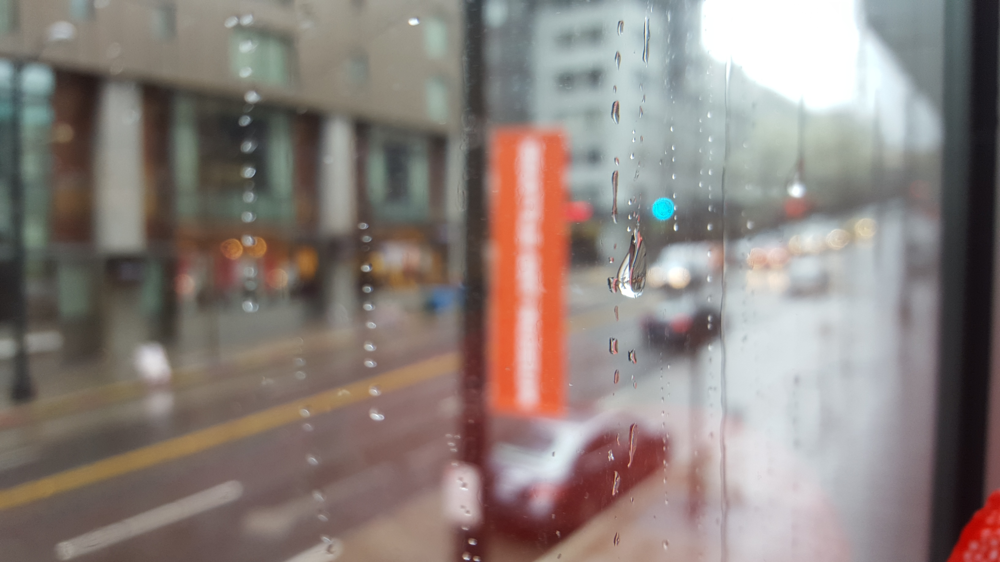

Home
Contact Me
Welcome
I would love to share some of the cities that I went to...
Places I have been to this year
Sequoia National Park
-- July 2016
Seattle -- March 2016
Sequoia National Park

Seattle Museum